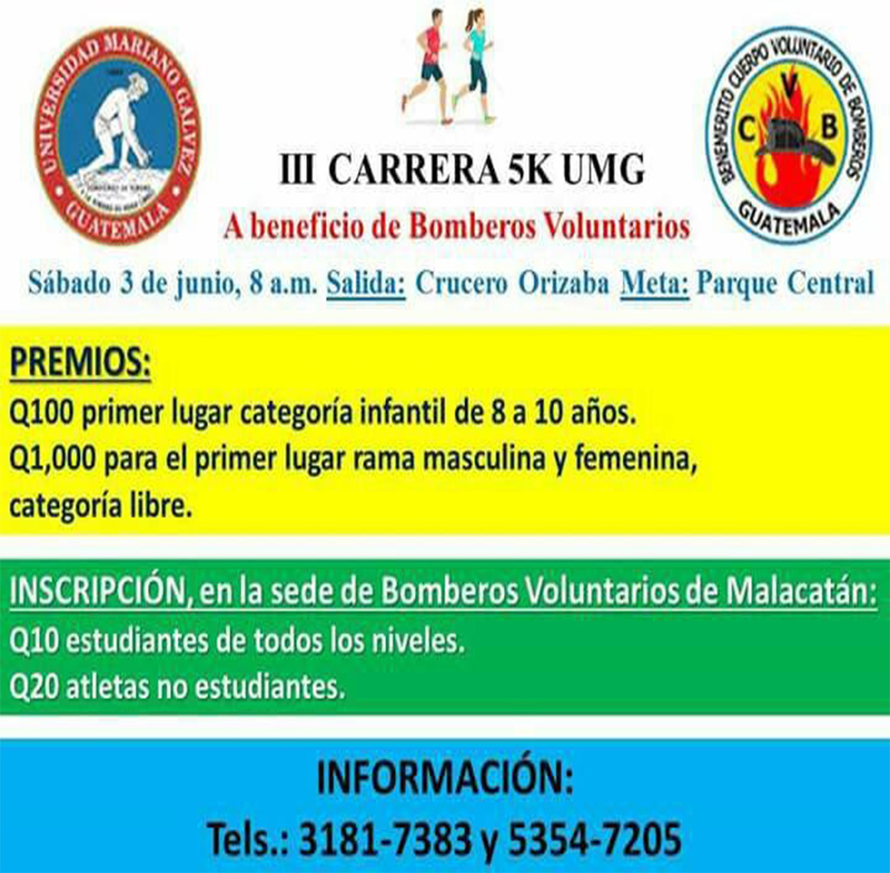
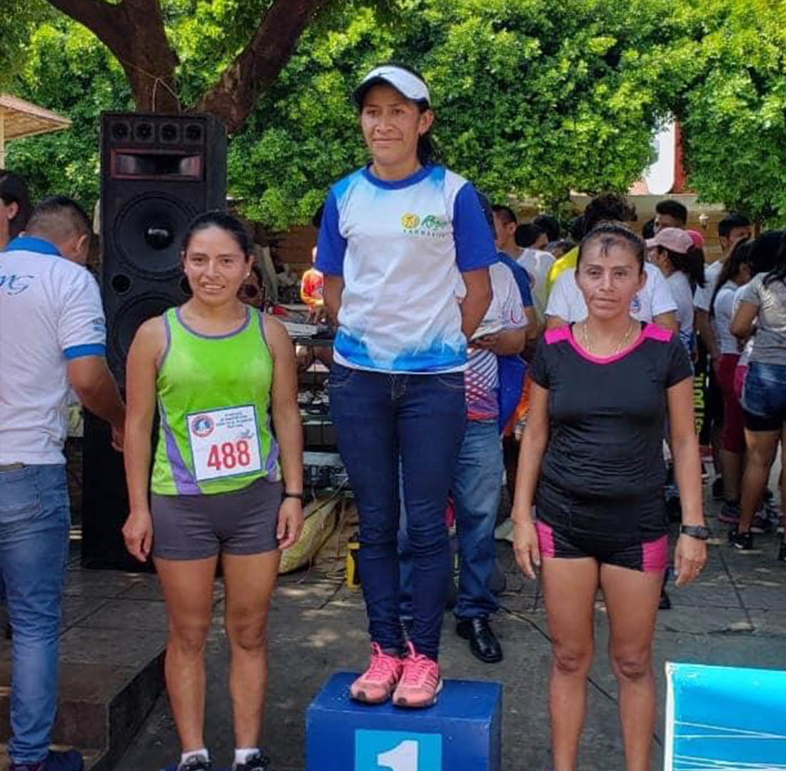
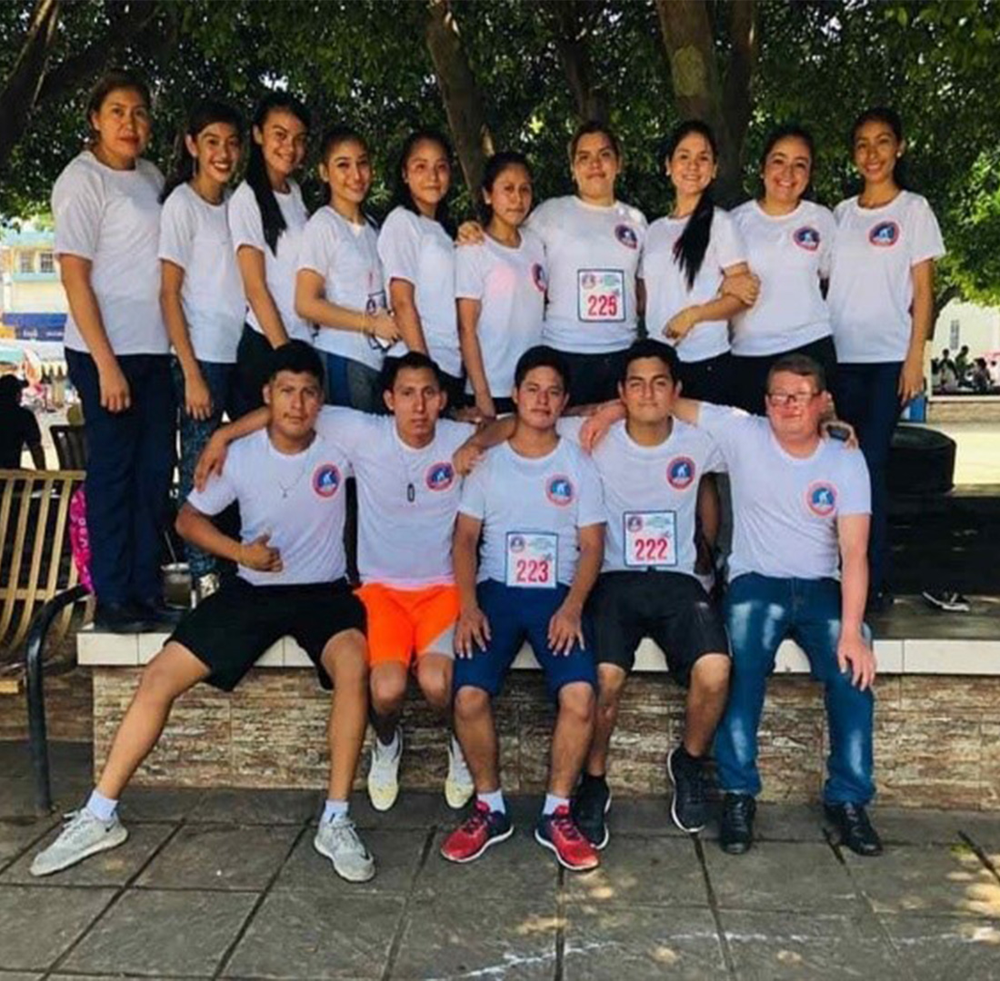

Universidad Mariano Gálvez se destaca por enseñarle a sus estudiantes actividades de proyección social dicho centro realiza la carrera 5 k a beneficio de bomberos voluntarios de la ciudad de Malacatán. Consiste en que los estudiantes del centro universitario participan en una carrera de 5 kilómetros en la que también deben de invitar a sus amigos familiares o conocidos a inscribirse y que los fondos recaudados sean destinados para el benemérito cuerpo de bomberos voluntarios.
Fue creado con el objetivo de proyectar acciones de servicio a la comunidad mediante asesorías jurídicas a las personas que no cuentan con los recursos necesarios para valerse de un buen abogado teniendo en cuenta siempre los valores que se les ha inculcado a cada uno de los alumnos egresados del centro universitario, formando así profesionales competentes y de servicio para la población malacateca. Dicho bufete se encuentra en la 3ra. calle, entre 8av y 7ma avenida de la zona 1, Cantón San Juan de Dios, Malacatán, S.M.
Como parte también de proyección social, Universidad Mariano Gálvez de Guatemala inculca valores como respeto y solidaridad con nuestro prójimo, y en este caso en diferentes cursos hacer labor social en beneficios de personas e instituciones que carecen de apoyo y recursos económicos. Estudiantes de la carrera de Ingeniería en Sistemas hicieron su labor social ayudando a los bomberos voluntarios de Catarina donando diferentes utensilios de primeros auxilios.
Otro proyecto lo hizo la carrera de Psicología ellos evaluaron y tomaron en cuenta un lugar donde estuvieran familias de escasos recursos y la labor de ellos fue ayudarlos con bolsa de despensa de artículos de primera necesidad ya que en ellos está el fundamento y el interés de fomentar el crecimiento tanto emocional como el desarrollo del cuerpo de lo que nos enseña la Universidad Mariano Gálvez a poder ayudar a nuestro prójimo.